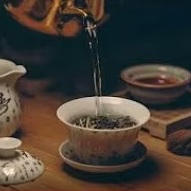

【冥想系列】


3, 宁静与心智澄明的疗愈之旅 - 通过冥想获得中和之力。实践中，可将道歉与原谅分开进行，例如先数日或数周专注于道歉，再转向原谅；或反之；亦可同时进行。当在道歉中浮现受伤记忆时，可立即练习原谅；反之亦然。
点击试听片段4, 宁静与心智澄明的疗愈之旅 - 通过冥想获得中和之力。实践中，可将道歉与原谅分开进行，例如先数日或数周专注于道歉，再转向原谅；或反之；亦可同时进行。当在道歉中浮现受伤记忆时，可立即练习原谅；反之亦然。
点击试听片段
5, 宁静与心智澄明的疗愈之旅 - 通过冥想获得中和之力。实践中，可将道歉与原谅分开进行，例如先数日或数周专注于道歉，再转向原谅；或反之；亦可同时进行。当在道歉中浮现受伤记忆时，可立即练习原谅；反之亦然。
点击试听片段【太极尺系列】


【功法教学 - 音频/视频】

少林内劲一指禅标准基础功法。
【其他】
其他链接：YouTube、网站、Facebook、Instagram 等
【一指禅线上课程】

在本课程中，您将： 领悟真正的自由源于内在智慧，而非外部环境 识别导致执着、痛苦及内心不安的根源 学习放下习惯性的思维与行为模式 培养更深层的泰然心境、清明觉知以及对生命自然流转的信任 体验平静自由的心境如何带来持久的安宁与幸福 本课程适合初学者及进阶练习者。
【著作/出版物】
郑博音大师的著作系统介绍少林内劲气功、 传统中医养生理念及日常实践方法。 内容深入浅出，帮助读者将传统智慧自然融入现代生活， 提升健康、修养与生命品质。
《正统中国传统气功》
作者：郑博音

“生命重于一切……”
怀着这一深刻的理念，气功大师郑博音为读者开启了通往正统气功的大门。他指明了一条清晰有效的途径，帮助人们有意识地增强体质、预防疾病，并激发身体与生俱来的自愈能力。
本书将扎实的理论知识与可立即付诸实践的功法完美结合。书中对功法的讲解清晰易懂，并配有大量插图，便于读者快速上手并获得亲身体验。
正统中国传统气功》适合每一位渴望健康、内心宁静与身心平衡的人士。无论是初学者还是资深练习者，都能从中获得宝贵的启示。此外，本书也是医务工作者、治疗师及气功教练的实用教学与参考指南。
试读章节： 试读章节下载（德文）
除个人著作外，本栏目还收录各类出版物、文章及研究资料， 从不同角度介绍气功、传统文化与整体健康理念， 为持续学习与深入研究提供丰富参考。